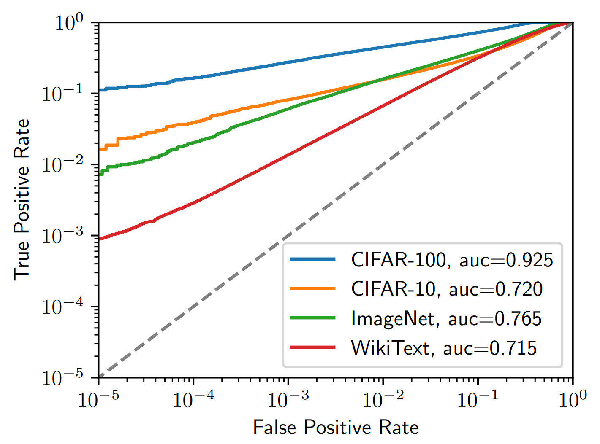
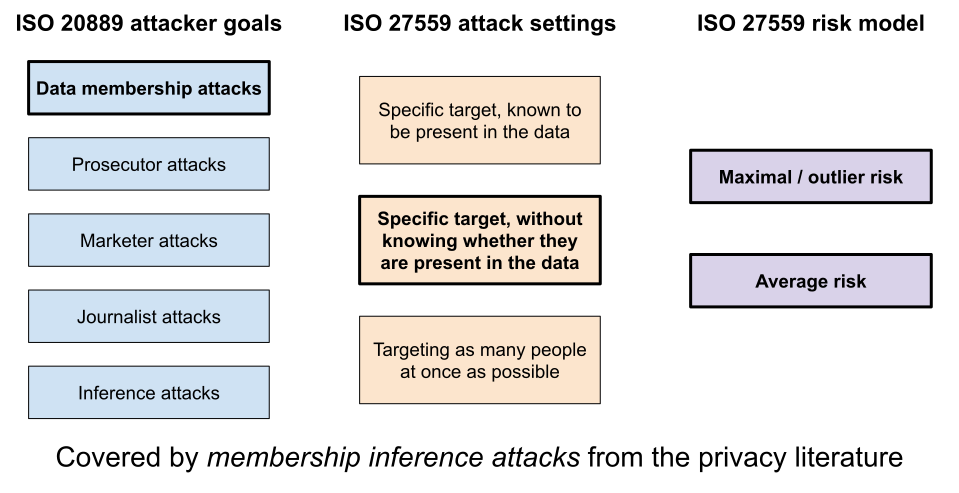
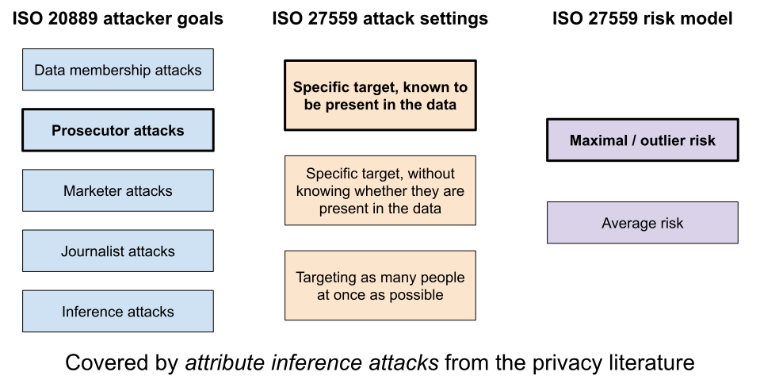
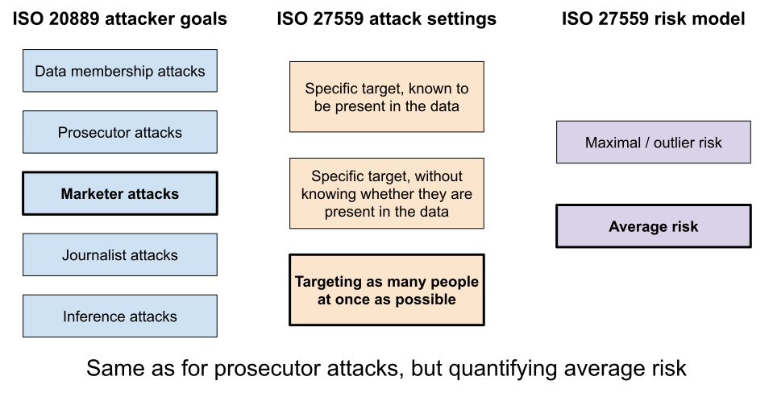
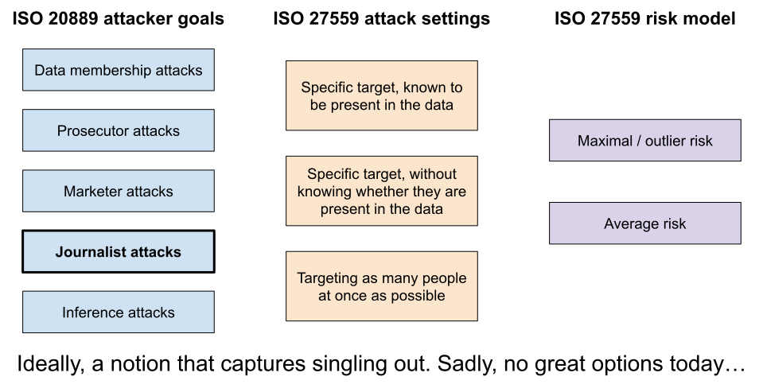

Mapping ISO standards to modern privacy attacks
ISO1 is an organization that publishes standards: documents that describe how to do things in a systematic, repeatable way across organizations. Some of these standards are very widely used, like ISO 27001 in cybersecurity. Existing ISO standards related to privacy, on the other hand, have not seen widespread adoption. The consensus among the privacy professionals I know is that they're too abstract and process-oriented to be that useful in practice.
Still, some organizations use them as part of their privacy and compliance program. This is especially true for large companies in heavily-regulated industries, like banking or insurance. ISO is a well-known organization, so being able to point at one of their standards and say "this is what we're doing" has a lot of value. For that reason, since I've started my independent consultancy, I've been asked about these standards a few times. There are two that are directly related to my area of expertise.
- ISO 20889 defines de-identification, re-identification, and lists a bunch of de-identification techniques and privacy measurement models.
- ISO 27559 is more recent and more focused: it's specifically about evaluating re-identification risk.
I don't have a very high opinion of these standards2. ISO 20889 has a very "kitchen sink" vibe, listing everything and not really recommending anything in particular. ISO 27559 is a little better, especially when it comes to defining processes around privacy risk evaluation. But the way it suggests measuring privacy risk, with thresholds based on "probability of re-identification", does not spark joy. You can quantify information gain in a principled way, but probabilities and thresholds as described in the standard are largely meaningless.
Still. Could we get the compliance benefits of using ISO standards, while measuring privacy in a meaningful way? I think so. The standards do not require quantifying risk in a very specific way: the probabilities above are only a suggestion. And I think we can map the attack models listed in the standards to principled approaches from the literature. Let's take a look.
Attack models
To model privacy attacks on a dataset, ISO 20889 lists five different goals that the attacker can have3.
- A data membership attack attempts to determine whether a specific individual was included in the dataset.
- A prosecutor attack attempts to re-identify a record belonging to a specific individual.
- A marketer attack attempts to re-identify as many people as possible in the data.
- A journalist attack attempts to find the individual associated with a given record in the dataset.
- An inference attack attempts to deduce a sensitive attribute based on the value of other attributes.
ISO 27559 also defines distinct attack settings. These are not about the goals of the attacker, but rather about what they know.
- The attacker is trying to find information about a specific individual, and they know that their target is in the data.
- The attacker does not know whether their target is in the data.
- The attacker does not have a specific target; rather, they are interested in reidentifying as many people as possible in the data.
It also suggests to compute two distinct kinds of risk: the maximum risk, for the most re-identifiable person in the data, and the average risk, across all the people in the data.
Let's put all this in a neat diagram:
![A diagram with three columns, each containing a title and multiple boxes. The
left one is labeled "ISO 20889 attacker goals" and has five boxes containing
"Data membership attack", "Prosecutor attack", "Marketer attack", "Journalist
attack", and "Inference attack". The
middle one is labeled "ISO 27559 attack settings" and has three boxes containing
"Specific target, known to be present in the data", "Specific target, without
knowing whether they are present in the data", and "Targeting as many people at
once as possible". The right one is labeled "ISO 27559 risk model", and has two
boxes labeled "Maximal/outlier risk" and "Average
risk".](images/iso-reidentifiability-concepts.svg)
OK, so these are five types of goals, three settings, and two methods of computing risk. Does it mean we have to evaluate 30 different scores? I don't think so, because a lot of possible combinations don't make sense. Here is my approach to interpreting these high-level goals into meaningful ways to quantify privacy risk.
Data membership attacks
The idea of a data membership attack is simple: the attacker is trying to figure out whether their target is in included in the sensitive dataset. The setting of such an attack is clear: the attacker does not know whether their target is in the data. The whole point is to figure it out!
This kind of attack corresponds exactly to what is called a membership inference attack in the academic community. It's widely studied in machine learning contexts, and a lot of work has gone into finding principled ways of quantifying the success of such attacks. A common way to do so is to plot a trade-off curve between false positives and false negatives:

An example taken from this paper, which also gives a good explanation of how to quantify the success of membership inference attacks in a principled way.
The trade-off curve helps us understand that not all attackers have the same goal: they can either make a guess on many targets and be wrong on a fraction of them, or focus on the targets for which their certainty is highest. This maps quite nicely with the distinction between maximum risk and average risk from ISO 27559!
- To measure the average risk, we can attack many data points sampled from the original distribution, and compute the overall success rate.
- To measure the maximum risk, we can instead look at the attacker's success rate if we allow them to only focus on the most-certain records.
To get a more complete picture of the risk, we can also look at the attacker's success rate on specific subpopulations.

Prosecutor attacks
In a prosecutor attack, the goal is to find the record associated with a specific individual. This assumes that the attacker knows that their target is in the dataset, and is trying to find out which record is associated with them. But there's another hidden assumption there: that the output data is composed of records, and that there is a one-to-one correspondence between real records and output records. This doesn't quite make sense for statistics, or synthetic data. How can we interpret this kind of attack to more generic kinds of outputs?
It's worth taking a step back and wonder what the attacker is actually trying to do. If I know that you are in a dataset, and I know some information about you, and the dataset only contains the information I already know about you, then… There is not much left to protect. Finding your record may be a "successful" attack, but it's not a meaningful one: I haven't learned anything!. Instead, privacy risk becomes concrete if I learn something new about you, like the value of one previously-unknown sensitive attribute.
There are attacks in the literature that match this idea. They are called attribute inference attacks: the goal is for an attacker with some prior knowledge about their target to learn something new about them. Quantifying those rigorously is a little trickier than for data membership attacks: we need to be careful to compare success rates to good baselines. But again, there is principled prior work on this, see e.g. the privacy game introduced in this paper.
Just like data membership attacks, prosecutor attacks can target either a random person in the dataset, or focus on specific subpopulations, or look at the records that are most at risk (often outliers). My understanding from the wording of ISO 20889 is that prosecutor attacks should focus on the most vulnerable people in the dataset, so that's what I would do.

Marketer attacks
The goal of a marketer attack is to re-identify as many individuals as possible. This has a straightforward parallel to reconstruction attacks, like the one ran by the U.S. Census Bureau: the idea is to attempt to retrieve as much as the original data as possible, and link it with an auxiliary dataset to augment it. This seems like the most natural way to interpret the ISO standard: run a similar attack to try and emulate what a marketer would want to do, for example to augment their own data.
How to quantify the success of a reconstruction attack? One possibility is to take the approach from this paper: have the attacker output a ranked list of reconstructed records, where the records at the beginning of the list are those that the attacker is most confident about. This way, we can look not just at the total fraction of correct guesses, but also at the success rate of an attacker who only targets the most vulnerable records.
One problem with this approach is that reconstructing records is not always a clear privacy issue. Consider the example from my article about the Census attack. If an attacker guesses "there is a white male aged 30" in a geographic area full of young white people, they will probably be correct, but that's not a privacy issue! It's the same problem as before: we need to distinguish inferences about specific people from inferences about the overall data distribution.
One possibility is to run re-identification attacks using auxiliary datasets, like the Census did. Unfortunately, this is very difficult to do in practice. We'd have to think about about what kind of auxiliary data an attacker could have, then try to obtain or simulate such data before we even try to build an attack. It's a lot of work, and it's also brittle: if our assumptions about the attacker are a little bit wrong, our measure of risk might be completely off.
Instead, I would suggest using the same method as for prosecutor attacks, and run attribute inference attacks from the privacy literature. This is consistent with the wording in ISO 20889, in which the only difference between two types of attacks seems to be the way to quantify risk: marketer attacks are clearly concerned about average-case risk, and are only successful if many records can be successfully attacked, not just a few outliers.

Journalist attacks
The idea of journalist attacks is to go the "reverse direction" from prosecutor attacks: instead of taking one real person and figuring out which record they match in the dataset, take one record in the dataset and match it to a real person. This may be a little confusing, because re-identification attacks that use an auxiliary dataset (like the Census attack) are essentially doing both things at once. So how can we interpret this goal?
One option is to take inspiration from the concept of singling out, mentioned in the GDPR as one of the ways to determine whether data is anonymous. Intuitively, if you can isolate one record from the original dataset, it seems like an indication that something is a little suspicious. I am aware of two notions in the literature that attempt to capture this goal.
- One of the metrics from the Anonymeter framework, called Singling Out, takes a natural approach: the attacker guesses predicates, and wins when a predicate captures a single person in the dataset. However, it has some conceptual flaws: it is specific to one kind of data release (synthetic data) and attack (targeting outlier attribute values), and there is no link between this metric and formal privacy notions. So it's hard to trust whether this score gives accurate information: the metric may suggest that there is a privacy issue even though the mechanism is safe.
- Another one is PSO security. It has the kind of conceptual solidity that we're looking for: it has a well-defined attacker with a clear threat model. It also has a conceptual link with differential privacy: a DP mechanism is also PSO secure, with some conversion between parameters. However, there's no easy way to check or disprove whether a mechanism is PSO secure, so I don't know of any practical way to convert it into an empirical privacy metric.
This is not a great state of affairs, and I hope it improves! This is one area in which unifying theory and practice really seems worthwhile. It would be nice to have a empirical privacy metric that captures the notion of singling out, but with robust theoretical foundations.

Inference attacks
Inference attacks as defined by ISO 20889 seem to capture the kind of attack that l-diversity is supposed to protect against: a situation where records are protected with k-anonymity, but all records in a group have the same sensitive attribute. The reasoning goes: an attacker could then learn a sensitive attribute associated with someone, even if they don't re-identify them.
However, translating this idea to data releases protected with other techniques is not straightforward. To interpret it in a more generic way, we have two options:
- We can say that running attribute inference attacks covers this risk model. This is a little awkward, because we're then using the same method to quantify risk from both prosecutor/marketer attacks and inference attacks.
- We can also take this opportunity to, again, point out the fundamental difference between learning inferences about individuals or about populations, and argue that the latter should not be a privacy goal.
The latter option is my personal favorite, because the implicit threat model from l-diversity does not clearly distinguish between the two. Say that in a dataset, everyone from a certain population (e.g. people who live next to a chemical plant) shares a sensitive attribute (e.g. gets cancer). Then, knowing that someone lives there allow you to learn something more about this person (they are more at risk of cancer). But this is true regardless of whether this person is in the dataset. So it doesn't make sense to quantify the privacy of the dataset based on that fact!
So this may be a controversial one to end on: I would suggest not attempting to capture "inference attacks" from ISO 20889 with a privacy metric. But this seems like the right choice, especially since ISO 27559 goes in the same direction: the more recent standard focuses only on re-identifiability risks, not on inference. I don't know what happened behind the scenes, but this omission feels deliberate. I can't imagine that an organization would get in trouble for performing principled privacy evaluation according to the first three or four attack models, and not consider statistical inference as a risk.
Conclusion
In privacy risk analysis, there is still a huge gap between principled approaches from academic work, and requirements of practical use cases. We privacy experts have a lot of work to do to try and bridge that gap! But even when the requirements seem somewhat absurd, like working with questionable standards, we can still find ways of addressing them in a meaningful, principled way, and achieve solid outcomes.
If your organization could benefit from a robust approach to quantifying and controlling re-identification risk, hit me up! I would be happy to help you provide strong and meaningful privacy guarantees to your users, and give solid arguments to your legal & compliance folks during your next audit or contract negotiation.
-
An acronym that stands for International Standardization Organization, except no it doesn't. ↩
-
The fact that they are not open access, and in fact very expensive, is also pretty ridiculous. ↩
-
They are listed here in a different order than in the standard, to align with the flow of the rest of the blog post. ↩